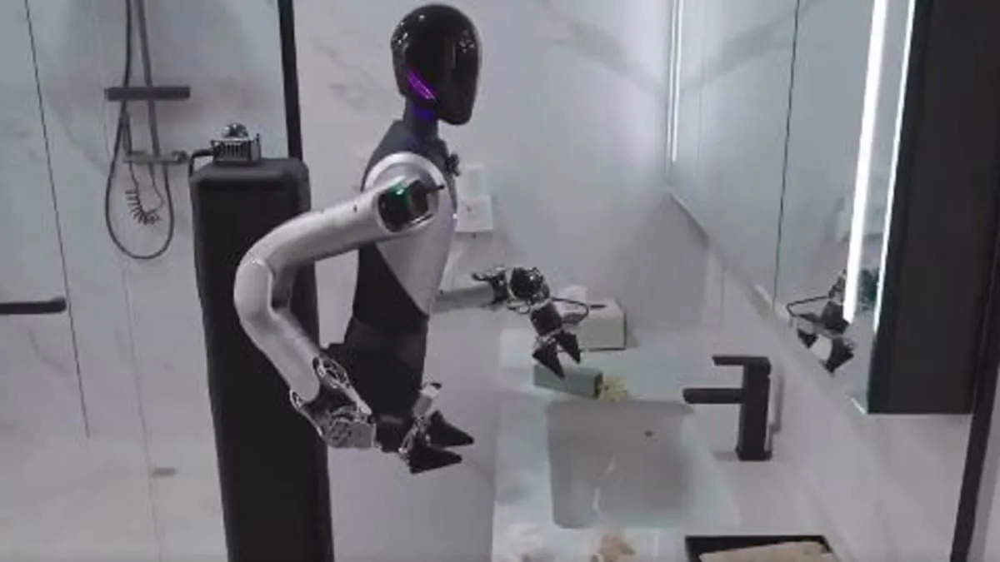

Zerith H1 brings humanoid robots to hotel operations
Originally posted on LinkedIn, June 22, 2025.
Zerith H1 launched in January 2025. Six months later, hundreds of units had already been sold. The humanoid robot can do it all:
- Clean toilets and showers
- Remove trash
- Restock toiletries
- Deliver towels on demand
It handles these tasks without a single person. With smart wheels, support for complex building layouts, and the ability to move through narrow corridors, it is designed for the maintenance challenges of hotels and hospitals.
Zerith plans to manufacture 500 robots in 2025, then expand into education, exhibitions, and entertainment. This is probably only the beginning. Robots like this address the workload, cost, and worker availability problems in maintenance and operations, pushing us toward a future where humans are only “knowledge workers,” not manual laborers.
